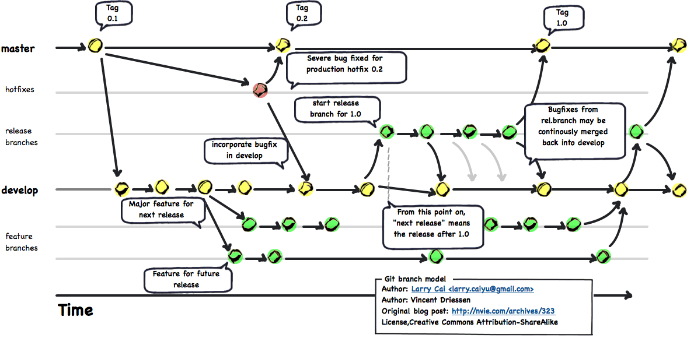

GitFlow
Introduction¶
GitFlow is a Git Workflow Extension. The following diagram gives a good idea how it works.

Installation¶
Prerequisites¶
Make sure you have Git installed. Note the path to the Git directory. In this manual, we will use C:\Program Files\Git.
Prepare the GitFlow local repository¶
External dependencies
- Submodule dependency on shFlags
- 3 files from the util-linux-package
Go to the util-linux-ng for Windows website. Download the Binaries and Dependencies in zip-format. Retrieve getopt.exe file from the bin folder in the Binaries. Retrieve libintl3.dll, and libiconv2.dll from the bin folder in the Dependencies packages. (This link has them all in one place.)
Copy all three files to the bin folder of your Git installation, e.g. C:\Program Files\Git\bin.
Open an Administrator command window and run these commands (make sure you also get the right diagnostic messages):
1 2 3 4 5 6 7 8 9 10 11 12 13 14 15 16 17 18 19 20 21 | git clone https://github.com/nvie/gitflow.git cd gitflow git submodule -2fb06af13de884e9680f14a00c82e52a67c867f1 shFlags git submodule init Submodule 'shFlags' (git://github.com/nvie/shFlags.git) registered for path 'shFlags' git submodule update Cloning into 'shFlags'... remote: Counting objects: 454, done. remote: Compressing objects: 100% (55/55), done. remote: Total 454 (delta 389), reused 454 (delta 389) Receiving objects: 100% (454/454), 101.19 KiB, done. Resolving deltas: 100% (389/389), done. Submodule path 'shFlags': checked out '2fb06af13de884e9680f14a00c82e52a67c867f1' git submodule status 2fb06af13de884e9680f14a00c82e52a67c867f1 shFlags (1.0.3) |
Install GitFlow¶
Run the following commands with the correct path to your Git installation:
1 2 | cd contrib msysgit-install.cmd "C:\Program Files\Git" |
Test GitFlow installation¶
Test the installation by running
1 | git flow help
|
You should see something like this:
1 2 3 4 5 6 7 8 9 10 11 12 13 14 | usage: git flow <subcommand> Available subcommands are: init Initialize a new git repo with support for the branching model. feature Manage your feature branches. bugfix Manage your bugfix branches. release Manage your release branches. hotfix Manage your hotfix branches. support Manage your support branches. version Shows version information. config Manage your git-flow configuration. log Show log deviating from base branch. Try 'git flow <subcommand> help' for details. |